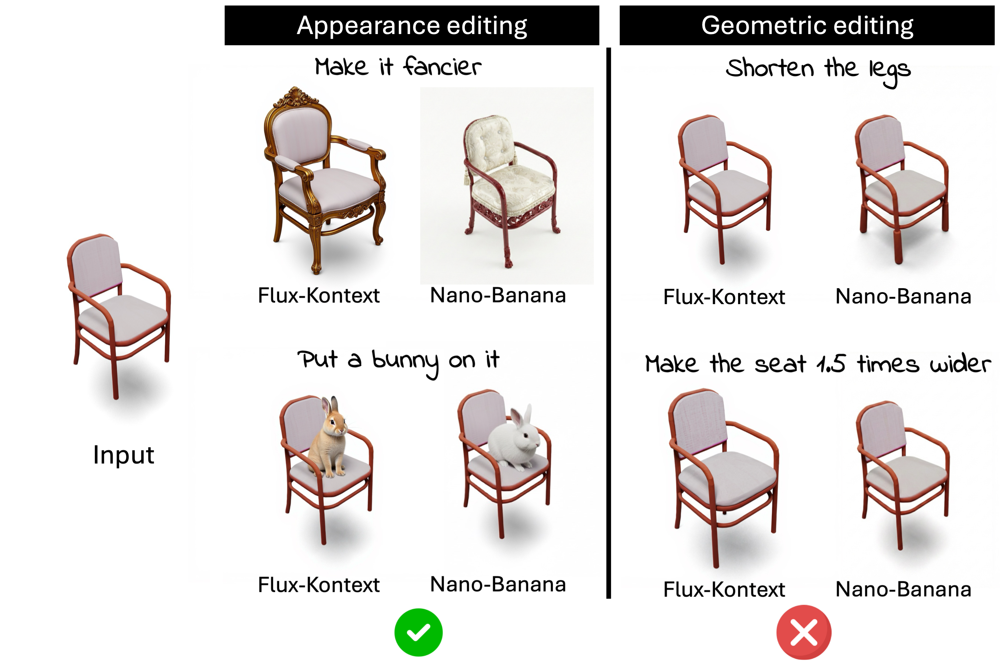
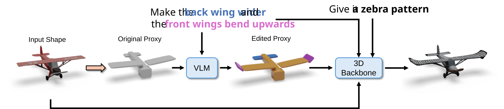
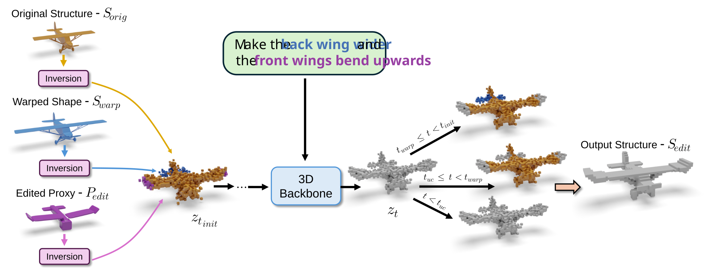

Prox-E
Fine-Grained 3D Shape Editing via Primitive-Based Abstractions
SIGGRAPH 2026
TL;DR: We introduce
Prox-E, a framework
performing
fine-grained 3D shape editing
by abstracting 3D shapes into a primitive-based proxy shape,
editing that shape using a VLM and using the edited proxy shape to
drive a 3D diffusion model.
Abstract
Text-based 2D image editing models have recently reached an impressive level of maturity, motivating a growing body of work that heavily depends on these models to drive 3D edits. While effective for appearance-based modifications, such 2D-centric 3D editing pipelines often struggle with fine-grained 3D editing, where localized structural changes must be applied while strictly preserving an object’s overall identity. To address this limitation, we propose Prox-E, a training-free framework that enables fine-grained 3D control through an explicit, primitive-based geometric abstraction. Our framework first abstracts an input 3D shape into a compact set of geometric primitives. A pretrained vision–language model (VLM) then edits this abstraction to specify primitive-level changes. These structural edits are subsequently used to guide a 3D generative model, enabling fine-grained, localized modifications while preserving unchanged regions of the original shape. Through extensive experiments, we demonstrate that our method consistently balances identity preservation, shape quality, and instruction fidelity more effectively than various existing approaches, including 2D-based 3D editors and training-based methods.
Motivation

2D editors excel at modifying object appearance and adding new objects, such as making the chair fencier and inserting the bunny. However, they fall short on geometric editing, which requires an understanding of 3D parameters to produce accurate results.
Despite this, the majority of 3D editing methods still rely on these 2D editors to carry out the edits.
How does it work?
Given an input 3D shape and a text prompt, Prox-E first abstracts the shape into a primitive-based proxy, edits that proxy using a VLM agent to specify structure-aware modifications, and then uses the edited proxy to drive a 3D Generative Backbone. Finally, appearance is refined using 2D image editors to produce the final edited shape.

These edits guide a proxy-induced denoising process by blending inverted latents from the original structure (yellow), warped shape (blue) and edited proxy (purple) to generate an updated structure while preserving object identity.

Structure Editing with a VLM

We perform structure editing with a VLM agent to produce an edited proxy. The VLM agent receives as input the proxy's JSON file—where each primitive is described by its scale, rotation, translation, and shape exponent parameters—a text editing instruction, the rendering of the original shape, and multi-view renderings of the proxy. By integrating these modalities, the VLM reasons over the primitive parameters to produce an updated JSON file, which is used to generate new multi-view renderings of the edited proxy. This process repeats iteratively until the edit is confirmed or the maximum number of iterations is reached.
Results on Edit3D-bench
Interactive glTF / GLB viewers — drag on any mesh in a column to orbit all four meshes in that column together. Each row shows two editing examples (fox / elephant, then cactus / building); for each example, meshes are shown in order: input shape, original proxy abstraction, edited proxy abstraction, and final output.
Note: Browsers often block loading these models
when the page is opened as a local file (file://). Run
a local server from the project folder instead, for example:
python3 -m http.server 8000
then open http://localhost:8000/.
When the site is served over HTTP or HTTPS (for example GitHub
Pages), the viewers load normally.
make the tail longer
make it wear a red hat
make the pot cubic
make it into a windmill
Results on ShapeTalk
Same setup as above: four meshes per example (Input, Original Proxy,
Edited Proxy, Output), with
linked orbit within each column. Six ShapeTalk
examples are shown in three rows (two per row). Results are loaded
from
webpage_assets/meshes/shapetalk_results/.
the legs are spaced further apart
the base has more layers
the shade is bigger
the top is more narrow
there is no stretcher connecting the front legs
the table has a sub-table underneath
BibTeX
@misc{sella2026proxe,
title = {Prox-E: Fine-Grained {3D} Shape Editing via
Primitive-Based Abstractions},
author = {Sella, Etai and Phung, Hao and Amiel, Nitay and
Litany, Or and Patashnik, Or and Averbuch-Elor, Hadar},
year = {2026},
note = {arXiv and venue fields to be added}
}
Acknowledgements
Acknowledgements will be updated for the camera-ready version.